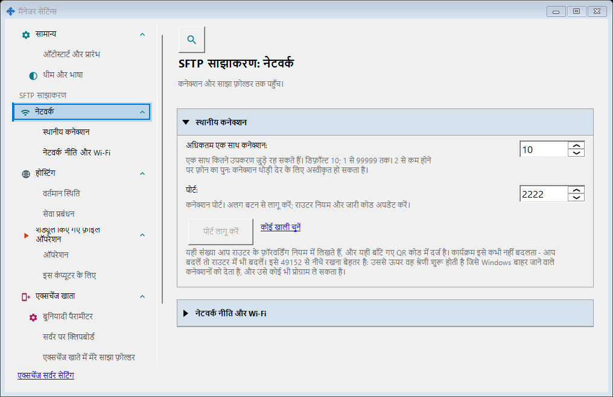
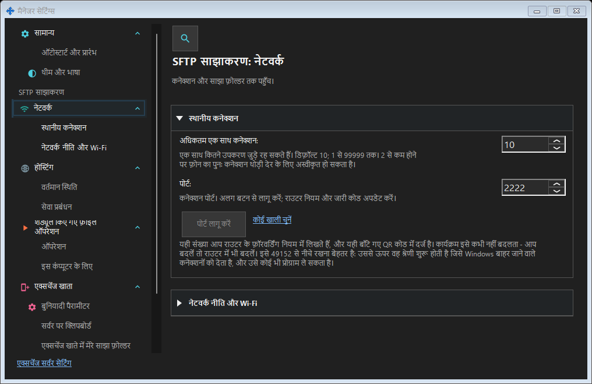

SFTP साझाकरण सेटिंग
यह किस लिए है
SFTP: पोर्ट, कनेक्शन सीमा, स्थानीय नेटवर्क और Windows सेवा। एक्सचेंज सर्वर: पता, TLS, खाते, डिवाइस, आमंत्रण, सेवा, लॉग और दूरस्थ प्रशासन।


इस क्रम में
SFTP पोर्ट लागू करें से बदलता है। विंडो बदलने पर ड्राफ्ट रहता है। बंद करते समय हाँ लागू करता है, नहीं छोड़ता है, रद्द करें जारी रखता है। त्रुटि पर ड्राफ्ट रहता है। पोर्ट बदलने के बाद कोड और राउटर नियम अपडेट करें।
तत्व
SFTP साझाकरण सेटिंग
SFTP: पोर्ट, कनेक्शन सीमा, स्थानीय नेटवर्क और Windows सेवा। एक्सचेंज सर्वर: पता, TLS, खाते, डिवाइस, आमंत्रण, सेवा, लॉग और दूरस्थ प्रशासन। SFTP पोर्ट लागू करें से बदलता है। विंडो बदलने पर ड्राफ्ट रहता है। बंद करते समय हाँ लागू करता है, नहीं छोड़ता है, रद्द करें जारी रखता है। त्रुटि पर ड्राफ्ट रहता है। पोर्ट बदलने के बाद कोड और राउटर नियम अपडेट करें।
SFTP साझाकरण सेटिंग
SFTP: पोर्ट, कनेक्शन सीमा, स्थानीय नेटवर्क और Windows सेवा। एक्सचेंज सर्वर: पता, TLS, खाते, डिवाइस, आमंत्रण, सेवा, लॉग और दूरस्थ प्रशासन। SFTP पोर्ट लागू करें से बदलता है। विंडो बदलने पर ड्राफ्ट रहता है। बंद करते समय हाँ लागू करता है, नहीं छोड़ता है, रद्द करें जारी रखता है। त्रुटि पर ड्राफ्ट रहता है। पोर्ट बदलने के बाद कोड और राउटर नियम अपडेट करें।
प्रबंधक सेटिंग · SFTP साझाकरण सेटिंग · एक्सचेंज सर्वर सेटिंग